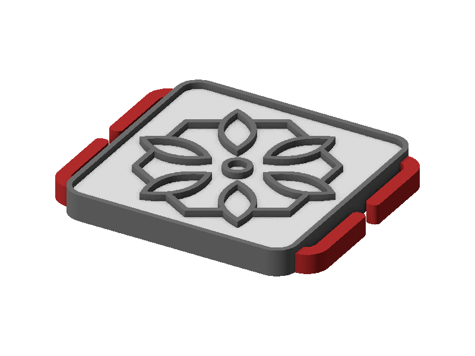

badge
Drafted with AI, not yet reviewed
by keycap
Pin badge and the bracket that holds it on a strap, its artwork, six petals in a hexagon, imported from SVG files.
The artwork is drawn as strokes, as in Inkscape. svg() fills every closed path whatever its paint, as OpenSCAD’s import() does, and outline() turns the filled shapes back into lines the width of two nozzle passes. center: true centres each file on its own shapes, as OpenSCAD does.

Files


Source
// SPDX-License-Identifier: 0BSD // // Pin badge and the bracket that holds it on a strap, its artwork, six // petals in a hexagon, imported from SVG files. // // The artwork is drawn as strokes, as in Inkscape. svg() fills every // closed path whatever its paint, as OpenSCAD's import() does, and // outline() turns the filled shapes back into lines the width of two // nozzle passes. center: true centres each file on its own shapes, as // OpenSCAD does. // --- Parameters --- const N = 0.4; // nozzle width const L = N / 2; // layer height const T = L * 15; // the pin's thickness const RAISED = L * 5; // the artwork's height above the pin const W = 35.0; // the pin's side const STRAP_W = 26.0; // the strap's width const STRAP_H = 2.5; // and thickness // --- 2D --- /// A band along the inside of `shape`'s outline, 1.5 nozzle widths wide, /// then grown by 0.1: OpenSCAD's /// `offset(0.1) difference() { s; offset(-N * 1.5) s; }`. fn outline(shape) { shape.difference(shape.offset(-global::N * 1.5)).offset(0.1) } let hexagon = svg("badge-hexagon.svg", #{center: true}); let petals = svg("badge-petals.svg", #{center: true}); let dot = svg("badge-dot.svg", #{center: true}); // The hexagon's line breaks where the petals cross it. let artwork = union( outline(hexagon).difference(petals), outline(petals), outline(dot), ); // OpenSCAD's offset(r) offset(-2 * r) offset(r) of a square is a square // with round corners. let base = rect(W, #{round: N * 8}); let edge = outline(base.offset(-0.01)); // --- Parts --- let pin = base.extrude([0.0, T]); let raised = union(edge, artwork).extrude([0.01, T + RAISED + 0.01]); // A frame round the pin, cut in two by the strap's slot. OpenSCAD's // rounded(2) rounds the corners the slot leaves by 0.8 and keeps the // frame's own, so each half is one polygon with a radius for each corner. let outer = [(W + STRAP_H) / 2 + N * 5, STRAP_W / 2 + N * 5]; let inner = [(W + STRAP_H) / 2, STRAP_W / 2]; let slot = STRAP_H / 2; let half = rounded_polygon([ [inner[0], slot], [outer[0], slot], [outer[0], outer[1], N * 8], [-outer[0], outer[1], N * 8], [-outer[0], slot], [-inner[0], slot], [-inner[0], inner[1]], [inner[0], inner[1]], ], N * 2, #{concave: N * 4}); let bracket = half.symmetric_y().extrude([0.01, T - 0.01]); draw(pin); draw_rgb(raised, 0.5, 0.5, 0.5); draw_rgb(bracket, 0.8, 0.2, 0.2);